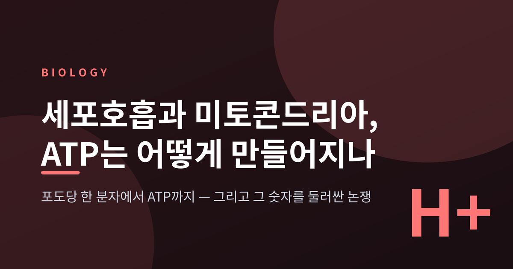
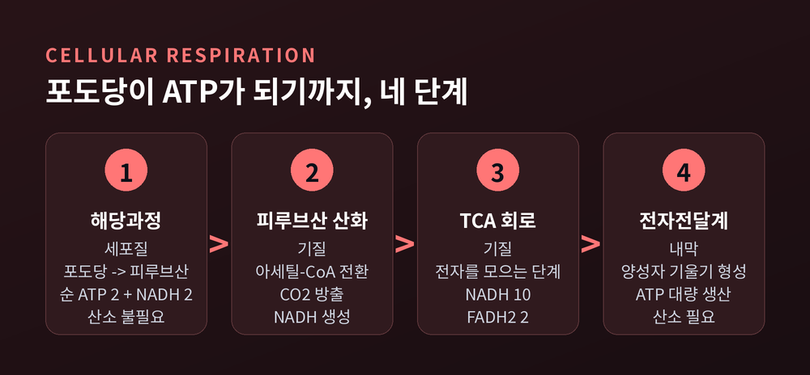
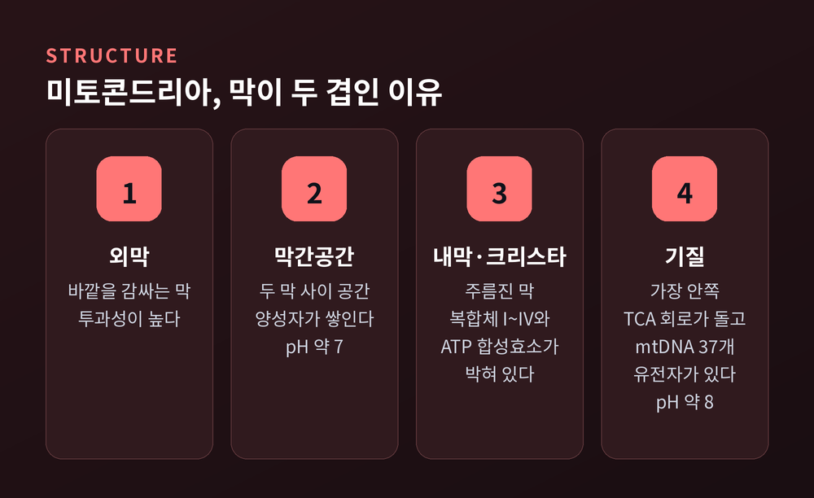
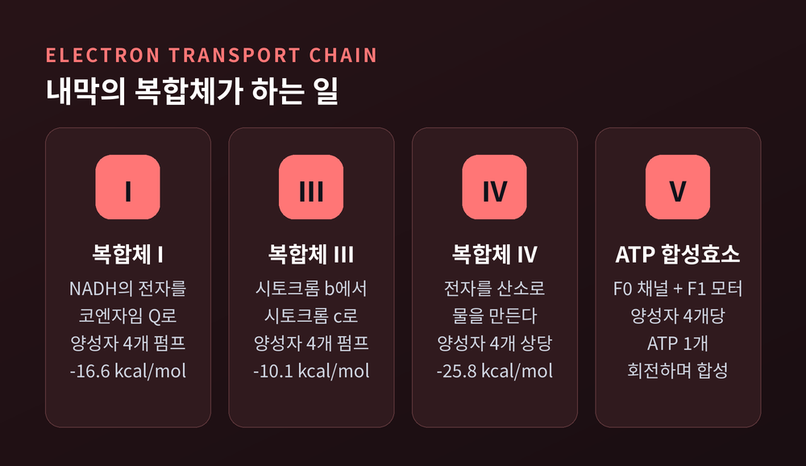
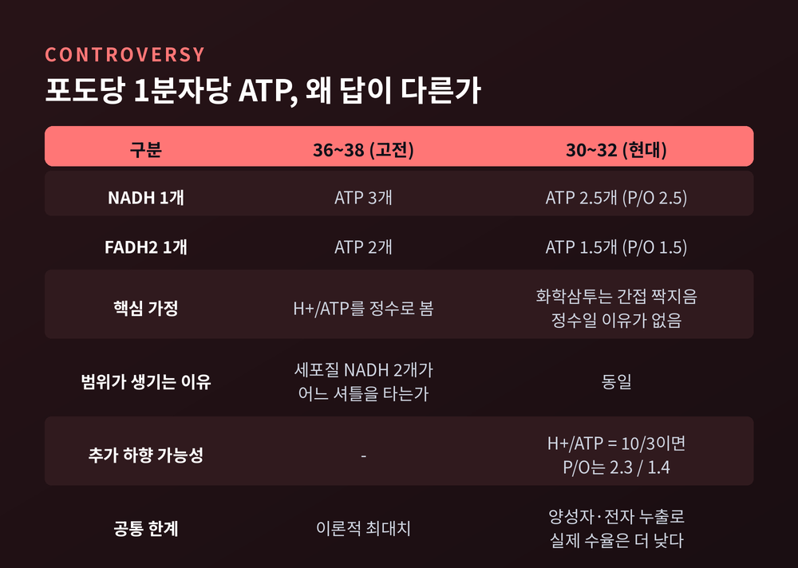
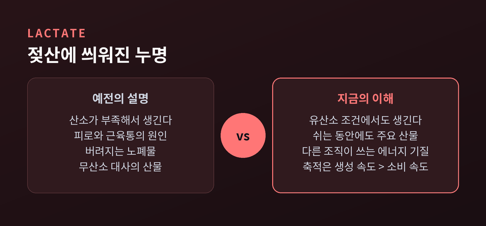
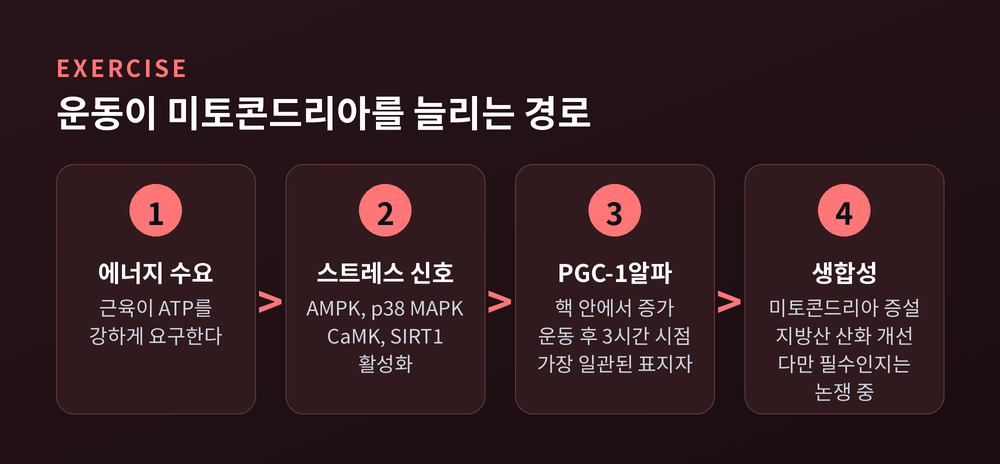

이번 글에서는 세포호흡의 전 과정을 단계별로 정리해 보겠습니다. 우리가 먹은 포도당 한 분자가 어떤 경로를 거쳐 ATP가 되는지, 그리고 그 ATP가 정확히 몇 개인지를 두고 교과서들이 왜 서로 다른 숫자를 적고 있는지까지 다룹니다. 미토콘드리아가 원래 세균이었다는 이야기와, 운동이 이 소기관을 늘리는 원리도 함께 살펴보겠습니다.
ATP는 아데노신에 인산기 세 개가 붙은 분자입니다. 이 인산기 사이의 결합이 끊어질 때 에너지가 나옵니다.
흥미로운 것은 보유량입니다. 사람의 몸이 특정 시점에 가지고 있는 ATP는 약 50g에 불과합니다.
그런데 하루 동안 합성되고 분해되며 재활용되는 양은 약 50kg입니다. 자료에 따라 65~75kg으로 보기도 합니다. 대략 자기 몸무게에 맞먹는 양인 셈입니다.
50g으로 50kg을 감당하려면 계산이 하나 나옵니다. ATP 분자 하나하나가 1분에 한두 번꼴로 재충전되어야 합니다.
그래서 ATP를 배터리가 아니라 화폐라고 부릅니다. 쌓아두는 물건이 아니라, 벌어서 즉시 쓰고 다시 버는 회전 자산입니다.
포도당이 ATP가 되는 여정은 크게 넷으로 나뉩니다. 무대도 두 곳으로 나뉩니다. 앞의 한 단계는 세포질에서, 나머지는 미토콘드리아 안에서 일어납니다.

무대가 되는 미토콘드리아의 구조도 미리 익혀두면 뒤가 편합니다. 막이 두 겹이라는 점이 특히 중요합니다.

첫 단계는 세포질에서 벌어집니다. 산소가 필요 없습니다.
6탄당인 포도당 한 분자를 3탄당인 피루브산 두 분자로 쪼갭니다.
수지는 조금 얄궂습니다. 먼저 ATP 두 개를 투자한 뒤, 나중에 네 개를 회수합니다. 순이익은 ATP 2개와 NADH 2개입니다.
이 단계에서 ATP가 만들어지는 방식은 눈여겨볼 만합니다. 해당과정의 마지막 반응에서 포스포에놀피루브산의 고에너지 인산기가 ADP로 직접 건네집니다. 이를 기질수준 인산화라 부릅니다. 뒤에 나올 전자전달계의 방식과는 근본적으로 다릅니다.
피루브산은 세포질에서 만들어졌으니 미토콘드리아 안으로 들어가야 합니다. 이 수입은 피루브산을 수산화이온과 맞바꾸는 수송체가 담당합니다.
기질에 도착한 피루브산은 아세틸-CoA로 바뀝니다. 이때 이산화탄소가 떨어져 나가고 NADH가 생깁니다.
이어지는 TCA 회로에 대해 한 가지 오해를 풀 필요가 있습니다. TCA 회로의 주된 산출물은 ATP가 아닙니다.
해당과정과 TCA 회로를 모두 합쳐도 직접 만들어지는 ATP는 4개뿐입니다. 대신 NADH 10개와 FADH2 2개가 쌓입니다.
즉 여기까지는 돈을 버는 단계가 아니라 전자를 모으는 단계입니다. 진짜 정산은 다음에 이뤄집니다.
미토콘드리아 내막에는 복합체 네 개(I~IV)가 박혀 있습니다. 여기에 다섯 번째 복합체인 ATP 합성효소가 더해집니다.

NADH에서 산소로 전자 한 쌍이 옮겨가는 반응의 자유에너지는 -52.5 kcal/mol입니다. 상당히 큰 값입니다.
이 에너지를 한 번에 터뜨리면 대부분 열로 날아갑니다. 그래서 세포는 이를 여러 단계로 잘게 쪼갭니다.
여기서 복합체 II의 처지가 딱합니다. 복합체 II는 양성자를 펌프하지 못합니다. FADH2에서 코엔자임 Q로 가는 전달은 자유에너지 감소가 신통치 않기 때문입니다.
FADH2가 NADH보다 수율이 낮은 이유가 여기 있습니다. 출발점이 늦으면 거둘 것도 적습니다.
전자가 흐를 때 방출된 에너지는 무엇에 쓰일까요. 양성자를 퍼내는 데 쓰입니다.
복합체 I과 III는 전자쌍당 양성자를 각각 4개씩 막 밖으로 밀어냅니다. 복합체 IV는 2개를 퍼내고, 나머지 2개는 산소와 결합시켜 물을 만듭니다.
그 결과 기질 안팎에 기울기가 생깁니다. 구체적인 숫자가 있습니다.
농도와 전기, 두 성분이 합쳐져 전기화학적 기울기를 이룹니다. 인지질 이중층은 이온을 통과시키지 않으므로, 양성자는 오직 단백질 채널로만 돌아올 수 있습니다. 이 제약 덕분에 에너지를 붙잡아 쓸 수 있습니다.
이 발상을 내놓은 사람이 피터 미첼입니다. 1961년의 일입니다.
당시 생화학자들의 반응은 냉담했습니다. 고에너지 화학기가 직접 전달되는 것이 아니라 막을 사이에 둔 양성자 기울기가 ATP를 만든다니, 받아들이기 어려웠던 것입니다. 이 가설이 일반적으로 수용되기까지 10년 이상이 걸렸습니다.
증거가 쌓이며 결국 정설이 되었습니다. 미첼은 1978년 노벨 화학상을 받았습니다.
지금 화학삼투는 미토콘드리아만의 이야기가 아닙니다. 엽록체에서도, 세균의 원형질막에서도 똑같이 작동하는 보편 원리로 인정받습니다.
다섯 번째 복합체를 따로 볼 만합니다. ATP 합성효소는 F0와 F1 두 부분이 가느다란 자루로 이어진 구조입니다.
F0는 내막을 관통하며 양성자가 되돌아올 채널을 냅니다. F1은 ADP와 인산을 붙여 ATP를 만듭니다.
작동 방식이 인상적입니다. F0를 통과하는 양성자의 흐름이 F1을 회전시킵니다. F1은 말 그대로 회전 모터로 작동하며 ATP를 찍어냅니다.
ATP 한 분자를 만드는 데 양성자 4개의 역류가 필요한 것으로 보입니다.
비유가 아닙니다. 우리 세포 안에는 실제로 돌아가는 모터가 있습니다.
여기서 학교에서 외운 숫자가 흔들립니다. 포도당 한 분자에서 나오는 ATP의 총수를 두고 교과서마다 답이 다릅니다.

36~38이라는 답부터 봅니다. 이 계산은 NADH 하나가 ATP 3개를, FADH2 하나가 ATP 2개를 만든다고 봅니다. 산화적 인산화에서 32~34개가 추가된다는 셈입니다. 오랫동안 교과서의 표준이었습니다.
30~32라는 답은 다릅니다. 현재 인정되는 P/O 비는 NADH에 약 2.5, FADH2에 약 1.5입니다. 정수가 아닙니다.
왜 정수가 아닐까요. 이유가 명쾌합니다. 전자전달과 ATP 합성의 연결이 화학량론적이 아니라 간접적이기 때문입니다. 둘은 오직 양성자 구동력을 통해서만 이어집니다. 애초에 "NADH 하나당 ATP 정확히 셋" 같은 딱 떨어지는 관계가 성립할 이유가 없었던 것입니다.
논쟁은 더 내려가기도 합니다. ATP 합성효소 구조 연구는 H+/ATP 비가 3이 아니라 10/3임을 시사합니다. 이 값을 쓰면 P/O 비는 2.3과 1.4까지 낮아집니다. 게다가 ATP 합성효소의 c-고리 크기가 생물종마다 다릅니다. 수율이 생물마다 다를 수 있다는 뜻입니다.
숫자가 하나가 아니라 범위인 데에는 또 다른 사정도 있습니다. 해당과정에서 만든 세포질 NADH 2개는 미토콘드리아 기질로 직접 들어가지 못합니다. 두 가지 셔틀 중 무엇을 타느냐에 따라 수지가 달라집니다.
마지막으로 인정할 것이 있습니다. 위 숫자들은 전부 이론적 최대치입니다. 실제 미토콘드리아에는 양성자 누출과 전자 누출이 존재합니다. 현실의 수율은 그보다 낮습니다.
정리하면 이렇습니다. 36~38은 틀렸다기보다 낡은 정수 가정 위에 선 값이고, 30~32가 현대의 표준에 가깝습니다. 그리고 그조차 상한선입니다.
예전엔 이렇게 배웠습니다. 격한 운동으로 산소가 부족해지면 젖산이 쌓이고, 그 젖산이 근피로와 다음 날 근육통을 부른다고.
지금은 상당 부분 수정되었습니다.

조지 브룩스가 1980년대부터 이 통념에 도전했습니다. 밝혀진 사실은 이렇습니다.
젖산은 완전한 유산소 조건에서도 만들어집니다. 산소가 부족해서 생기는 산물이 아닙니다. 정상 산소 상태로 쉬고 있는 동안에도 젖산은 주요 산물이며, 운동 중에는 더욱 그렇습니다.
게다가 젖산은 버려지는 노폐물이 아닙니다. 중요한 에너지 기질입니다. 만들어진 자리에서 다른 조직과 세포로 옮겨가 연료로 쓰입니다. 이를 젖산 셔틀이라 부릅니다.
그렇다면 고강도 운동에서 젖산이 쌓이는 것은 사실 아니냐고 물으실 수 있습니다. 사실입니다. 다만 이유가 다릅니다.
강도 대비 혈중 젖산 그래프에는 변곡점이 두 개 나타납니다. 젖산 역치 1(LT1)과 2(LT2)입니다. LT1을 넘으면 산화-해당 대사가 중간 정도인 type IIa 섬유가 동원됩니다.
이때 젖산이 늘어나는 까닭은 산소가 없어서가 아닙니다. 해당과정의 젖산 생성 속도가 미토콘드리아의 소비 속도를 앞지르기 때문입니다.
산소 유무의 문제가 아니라 생산과 소비의 속도 차이입니다. 오해받은 쪽은 젖산이었습니다.
세포호흡의 무대를 만든 주인공에게도 사연이 있습니다.
내부공생설은 널리 인정받는 이론입니다. 미토콘드리아는 한때 자유롭게 살던 알파프로테오박테리아의 내부공생 후손입니다.
증거는 세포 안에 남아 있습니다. 미토콘드리아는 자기 DNA를 가지고 있습니다. mtDNA는 작고, 원형이며, 이중가닥입니다. 세균의 DNA를 닮았습니다. 37개의 유전자를 암호화합니다.
화학삼투가 세균의 원형질막에서도 똑같이 작동한다는 사실 역시 이 기원설과 잘 맞아떨어집니다.
mtDNA는 수정 시 어머니에게서 옵니다. 모계 유전입니다. mtDNA가 보이는 독립적인 기능과 유전 양식은 미토콘드리아의 원핵생물 기원을 반영하는 것으로 볼 수 있습니다.
다만 아직 닫히지 않은 문제가 있습니다. 알파프로테오박테리아와의 연관을 뒷받침하는 증거는 충분하지만, 그중 어느 계통이 가장 가까운 친척인지는 여전히 진화학적 논쟁 중입니다.
미토콘드리아가 제 기능을 못 하면 어떻게 될까요. 미토콘드리아 질환은 생각보다 드물지 않습니다.
성인에서 mtDNA 변이의 최소 유병률은 1/5,000로 보고되었습니다. 핵 DNA 변이까지 합치면 성인 미토콘드리아 질환의 총 유병률은 약 1/4,300입니다. 성인 유전성 신경질환 중 가장 흔한 축에 듭니다.
여기에 흥미로운 구조가 있습니다. 일반 인구의 약 1/200이 병원성 mtDNA 점 돌연변이를 지니고 있습니다. 그런데 실제로 병이 되는 것은 약 1/5,000입니다.
차이를 만드는 것이 역치입니다. 변이 부하가 70~90%라는 표현형 역치를 넘어야 질환이 나타납니다. 변이를 가졌다고 모두 발병하지는 않습니다. 비율이 임계점을 넘어야 합니다. 같은 변이를 가진 가족끼리도 발현이 크게 다른 이유가 여기 있습니다.
노화 쪽으로 오면 이야기가 더 조심스러워집니다.
오랫동안 미토콘드리아 자유라디칼 노화 이론이 널리 받아들여졌습니다. 미토콘드리아에서 새어나온 활성산소가 손상을 누적시켜 노화를 부른다는 설명입니다.
이 이론은 현재 도전받고 있습니다. 설치류의 항산화 조작 모델은 수명을 늘리는 데 대체로 실패했습니다. 항산화 보충제 임상시험 결과도 대체로 실망스러웠습니다. 종간 비교와 식이·유전자 조작 데이터는 이 이론을 충분히 뒷받침하지 못했습니다.
대신 다른 관점이 떠올랐습니다. 활성산소는 손상만 일으키는 분자가 아니라 정상적인 세포 기능에 필요한 신호 전달 분자이기도 합니다. 증식과 분화, 사멸 같은 기본 과정을 조절하는 세포 내 메신저로 기능합니다.
미토호르메시스라는 개념이 여기서 나옵니다. 낮은 수준의 산화 스트레스가 적응 반응을 불러 오히려 스트레스 저항성을 높인다는 것입니다. 용량-반응이 직선이 아닙니다. 낮은 용량의 활성산소 노출은 사망률을 낮추고, 높은 용량은 높입니다.
아직 정리되지 않은 영역입니다. 단정할 단계는 아닙니다. 다만 "활성산소는 무조건 나쁘다"는 단순한 그림이 흔들리고 있다는 점만은 분명합니다.
마지막으로 반가운 이야기를 하나 다루겠습니다.

PGC-1α는 미토콘드리아 생합성을 조율하는 전사 보조활성인자입니다. 운동으로 인한 미토콘드리아 적응을 다루는 연구에서 가장 일관되게 보고되는 표지자입니다.
메타분석에서 지구성 운동 후 PGC-1α 발현은 크고 통계적으로 유의하게 증가했습니다.
시간 흐름이 구체적으로 관찰되었습니다. 핵 안의 PGC-1α 단백질은 운동 후 회복 3시간 시점에 늘어났습니다. 이 시점은 미토콘드리아 유전자들의 mRNA 발현이 증가하는 시점과 정확히 맞물렸습니다.
고강도 인터벌 트레이닝은 단 한 세션만으로도 핵 내 PGC-1α를 늘리고 미토콘드리아 생합성을 활성화했습니다.
신호 경로는 여럿이 모입니다. AMPK, p38 MAPK, CaMK, SIRT1이 수렴해 PGC-1α를 활성화합니다.
논리는 이렇게 이어집니다. 근육이 ATP를 강하게 요구합니다. 에너지 스트레스 신호가 켜집니다. PGC-1α가 활성화됩니다. 미토콘드리아라는 발전소가 증설됩니다.
쓸수록 늘어나는 셈입니다. 흔치 않은 일입니다.
다만 여기에도 반론이 있습니다. PGC-1α가 운동 유발 미토콘드리아 생합성에 필수적이지는 않다는 연구가 있습니다. 저자들은 이것이 해당 분야의 지배적 가정과 뚜렷이 대비된다고 밝혔습니다. 보상 기전이 따로 있을 가능성을 시사합니다.
가장 일관된 표지자인 것은 맞습니다. 그러나 유일한 스위치인지는 아직 논쟁 중입니다.
끝으로 한 마디만 더 드리겠습니다.
이 글을 정리하며 가장 오래 붙들린 대목은 수율 논쟁이었습니다. 36이든 38이든 30이든, 우리가 외운 숫자는 자연이 정한 상수가 아니었습니다. 그것은 어떤 가정을 세웠느냐의 결과였습니다.
미첼의 가설이 10년 넘게 의심받은 것도, 젖산이 오래 누명을 쓴 것도 같은 자리에 있습니다. 교과서의 숫자는 답이 아니라 현재까지의 최선입니다.
50g으로 하루 50kg을 돌려내는 몸의 살림살이는, 아직도 다 밝혀지지 않았습니다.
</content>